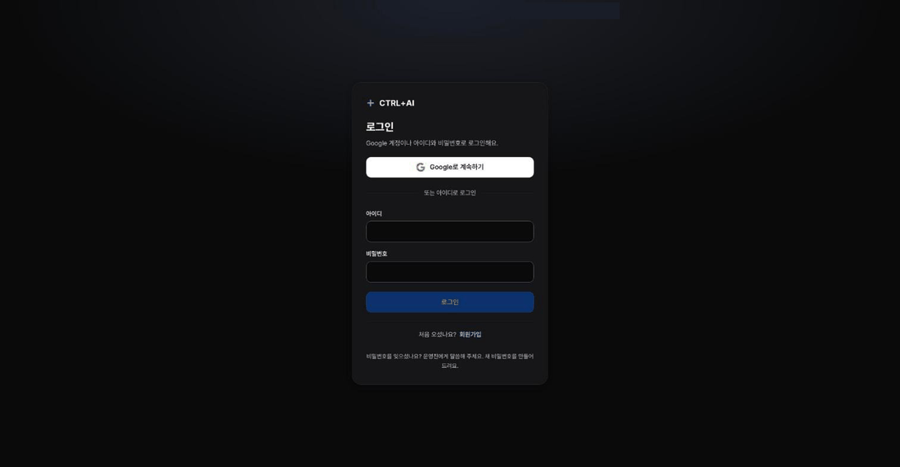
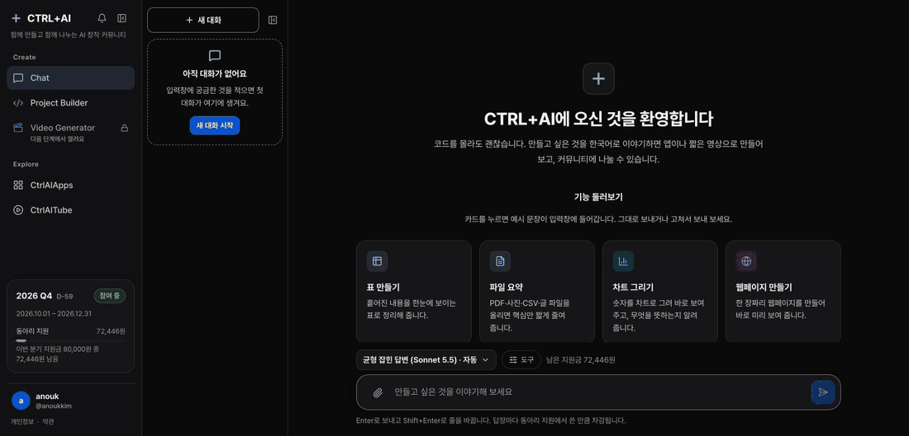
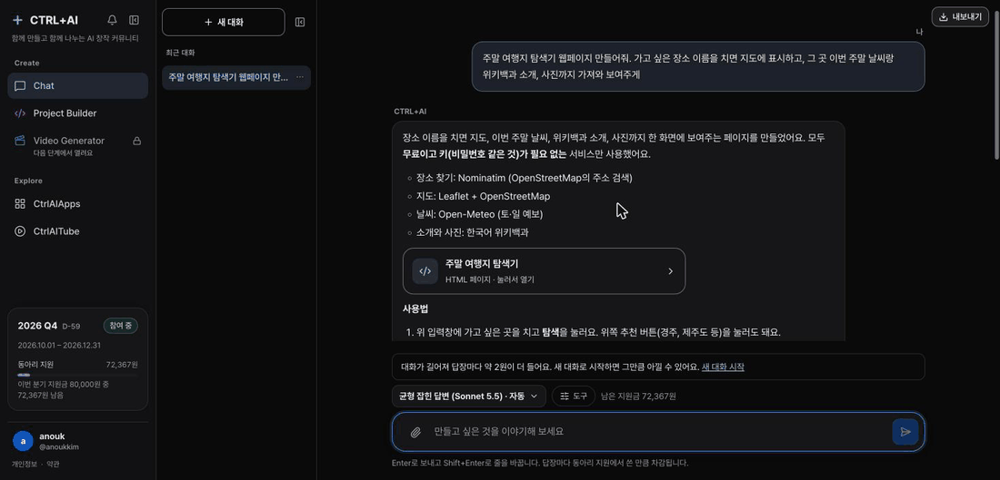
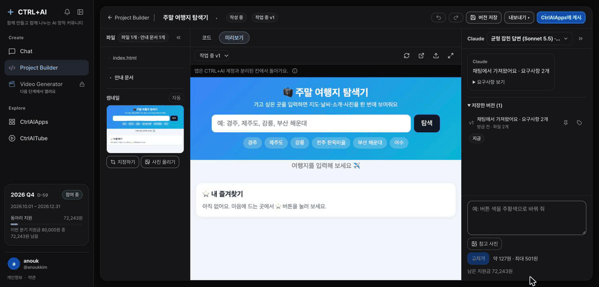
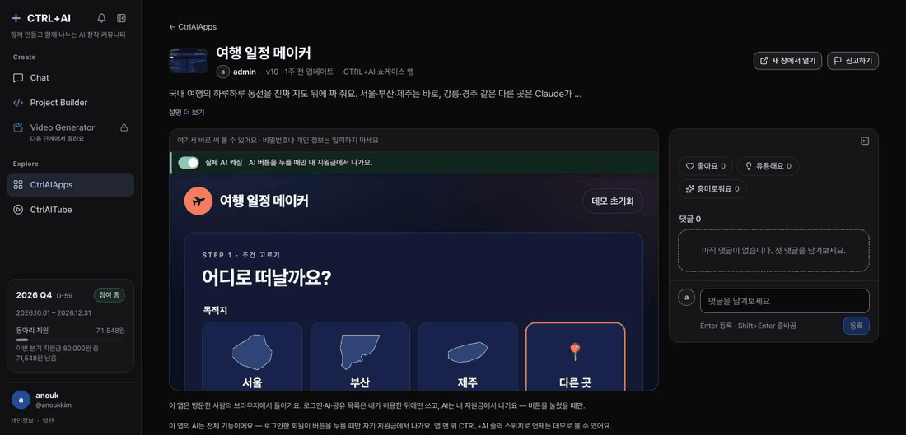
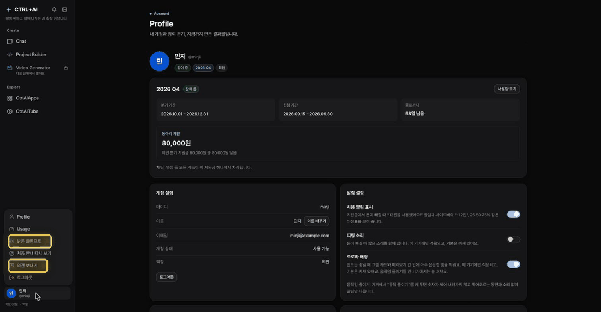

5분 분량 · 화면 탭 순서대로 「시작하기」 → 「채팅에서 앱까지」 → 「남이 만든 앱의 AI」 → 「화면 둘러보기」. 화면에는 짧은 제목만 있고, 설명은 전부 여기 있어요.
인사
안녕하세요. 오늘은 앞으로 같이 쓸 CTRL+AI를 5분 동안 실제 화면으로 보여드릴게요. 한 줄로 말하면, 하고 싶은 걸 한국어로 말하면 CTRL+AI가 만들어 주고, 그걸 다 같이 나누는 곳이에요. 코딩도, API 키도, 개발 환경도 몰라도 됩니다. 오늘은 가입부터 앱을 만들고 남의 앱을 써 보는 데까지, 여러분이 실제로 하게 될 순서 그대로 갈게요.
가입하고 이번 분기에 참여하기
먼저 가입이에요. 제가 보내 드리는 초대 링크로 들어가면 가입 화면이 나와요. 가입은 Google 계정으로만 해요. 노란 테두리 「Google로 계속하기」를 누르고 평소 쓰는 Google 계정을 고르세요. 그러면 「거의 다 됐어요」 화면으로 돌아와요. 여기서 CTRL+AI에서 쓸 아이디와 이름, 그리고 비밀번호를 두 번 적어요. 초대 코드는 링크에 들어 있어서 이미 채워져 있어요. 이렇게 해 두면 다음부터는 Google로도, 아이디·비밀번호로도 로그인할 수 있어요. 비밀번호를 잊으면 로그인 화면의 「비밀번호를 잊었어요」를 누르고 Google로 확인하면 새로 만들 수 있어요. 가입하면 처음 안내가 다섯 장 떠요. 건너뛰어도 되고, 나중에 다시 볼 수도 있어요.
그런데 가입만 하면 채팅이 아직 잠겨 있어요. 보시면 "이번 분기에 참여하지 않아…"라고 나오죠. 여기 「Profile에서 참여 신청하기」를 누르거나 Profile로 가서, 이 파란 버튼 「이번 분기 참여」를 누르세요. 그러면 「승인 대기」가 되고, 제가 운영진 화면에서 「승인」을 누르면 — 바로 이 화면이에요 — 여러분 Profile에 동아리 지원 80,000원이 생겨요. 분기마다 한 번씩, 이 8만 원 안에서 채팅이든 앱 만들기든 전부 쓰고, 개인 돈은 안 들어요. 다 쓰면 그 분기는 거기까지예요.
화면: 「시작하기」 탭 1 가입(로그인 → Google로 계속하기 → 거의 다 됐어요) → 2 처음 안내 → 3 분기 참여 → 4 운영진 승인 → 5 지원금
Chat의 옵션
승인되면 첫 화면이 Chat이에요. 입력창 아래 「균형 잡힌 답변」을 누르면 모델을 고를 수 있어요. 빠른 답변, 균형 잡힌 답변, 깊이 있는 답변 세 가지이고, 생각 깊이도 조절돼요. 한 번에 약 얼마인지가 고르기 전에 적혀 있으니까, 그냥 기본인 균형 잡힌 답변으로 쓰시면 돼요. 옆에 「도구」에는 생각 과정 보기, 웹 사용, 코드 실행이 있어요. 생각 과정 보기를 켜면 Claude가 어떤 순서로 생각했는지 답 아래에서 펼쳐 볼 수 있어요.
화면: 「화면 둘러보기」 탭 1 Chat 옵션
Chat에 한 줄, 바로 미리보기
이제 진짜 만들어 볼게요. 저는 "주말 여행지 탐색기 만들어 줘. 장소를 치면 지도, 이번 주말 날씨, 위키백과 소개, 사진까지"라고만 썼어요. 답이 실시간으로 써지고, 아래에 지금까지 든 돈이 원 단위로 계속 보여요. 이 답 하나에 79원이에요. 답 안에 「주말 여행지 탐색기 · HTML 페이지」 카드가 생기는데, 누르면 오른쪽에 미리보기가 바로 열려요. 채팅을 보면서 옆에서 눌러 볼 수 있어요. 날씨는 진짜 이번 주말 예보고, 사진과 소개는 위키백과에서 그때그때 가져온 거예요. 인터넷에서 가져오는 것도 되고, AI를 붙이는 것도 된다는 거죠.
화면: 「채팅에서 앱까지」 탭 1 물어보기 → 2 미리보기
말로 다듬기
마음에 안 드는 건 그냥 말로 고쳐요. "지도가 안 나와, 고쳐 주고, 별을 누르면 즐겨찾기 되게 해 줘." 그러면 무엇을 바꿨는지 먼저 설명하고 새 버전을 만들어요. 이번엔 124원. 새 버전을 열면 아래에 「내 즐겨찾기」가 생겼죠. 이렇게 채팅에서 몇 번 주고받으면서 최종본을 만들어요. 코드는 한 줄도 안 봐도 돼요.
화면: 3 다듬기
Builder로 보내서 진짜 앱으로, 게시까지
최종본이 마음에 들면 미리보기 아래 「Builder로 보내기」 한 번이면 돼요. 채팅에서 만든 그대로 Project Builder에 프로젝트로 들어와요. Builder에서는 더 큰 걸 시킬 수 있어요. "지도 제대로 나오게 하고, AI로 1박 2일 코스 짜는 버튼 넣어 줘." Claude가 파일을 하나씩 쓰는 게 그대로 보이고, 1분 반쯤 걸려서 393원. 이제 지도가 나오고, 앱 안에 ✦ AI 버튼이 생겼어요. 버튼 옆에 "1회 약 10원"처럼 값이 미리 적혀 있어요. 다 됐으면 오른쪽 위 「CtrlAIApps에 게시」를 누르면 모두가 쓸 수 있고, 「내보내기」로 ZIP이나 내 Claude로 가져갈 수도 있어요.
화면: 4 Builder로
남이 만든 앱, AI는 내 지원금에서
CtrlAIApps에는 다른 사람이 게시한 앱이 모여요. 「여행 일정 메이커」에 들어가 볼게요. 위쪽 띠에 "AI 버튼을 누를 때만 내 지원금에서 나가요"라고 적혀 있죠. 「일정 만들기」는 공짜고, 「✦ AI로 일정 짜기」만 돈이 들어요. 누르면 AI가 강릉에서 갈 곳을 골라 지도 위에 동선을 그려 주고, 아래에 "앱 AI 10원, 내 동아리 지원금에서"라고 떠요. 앱을 만든 사람 돈이 아니라 버튼을 누른 내 지원금에서 나가요. AI를 안 쓰고 싶으면 위쪽 스위치를 꺼서 데모로 보면 0원이에요. 좋아요랑 댓글도 남길 수 있어요.
화면: 「남이 만든 앱의 AI」 탭
Usage — 어디에 얼마 썼는지
내가 어디에 얼마 썼는지는 Usage에서 건별로 다 보여요. 채팅·빌더·영상으로 나뉘어 있는데, 이건 보기 편하라고 나눈 거지 따로 한도가 있는 건 아니에요. 전부 8만 원 하나에서 나가요. 왼쪽 아래 사이드바에도 남은 돈이 항상 보이고, 돈이 빠질 때마다 "12원을 사용했어요" 같은 알림이 떠요. 영상 만들기는 다음 단계에서 열려요.
화면: 「화면 둘러보기」 탭 2 둘러보기 — Usage
밝은 화면, 의견 보내기, 마무리
마지막으로 두 가지. 왼쪽 아래 내 이름을 누르면 메뉴가 나오는데, 여기 「밝은 화면으로」를 누르면 지금 보신 어두운 화면 대신 밝은 화면으로 바뀌어요. 그리고 같은 메뉴에 「의견 보내기」가 있어요. 막히거나 이상한 게 있으면 여기로 바로 보내 주세요. 제가 다 읽어요. 오늘부터는 Chat에 하고 싶은 걸 한 줄만 써 보세요. 감사합니다.
화면: 「시작하기」 탭 6 화면·의견 (또는 움짤 5)